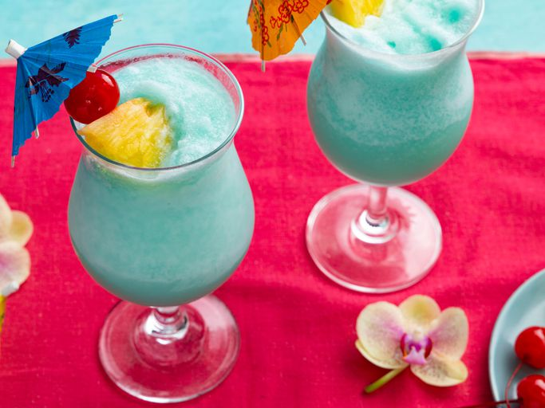

Blue Hawaiian Cocktail

Description
The Blue Hawaiian is a fun, refreshing cocktail made with rum, cream of
coconut, pineapple juice, and Curacao liqueur to create its signature blue
color. Invented in Hawaii in the 1950s, this tiki cocktail will have you
crooning like Elvis!
Ingredients
- 1 cup crushed ice
- 2 fluid ounces pineapple juice
- 1 fluid ounce light rum
- 1 fluid ounce blue Curacao liquer
- 1 fluid ounce cream of coconut
- 1 pineapple slice
- 1 maraschino cherry
Steps
-
Combine crushed ice, pineapple juice, rum, blue Curacao, and cream of
coconut in a blender.
- Blend on high speed until smooth.
-
Pour into a chilled highball glass. Garnish with a slice of pineapple
and a maraschino cherry.